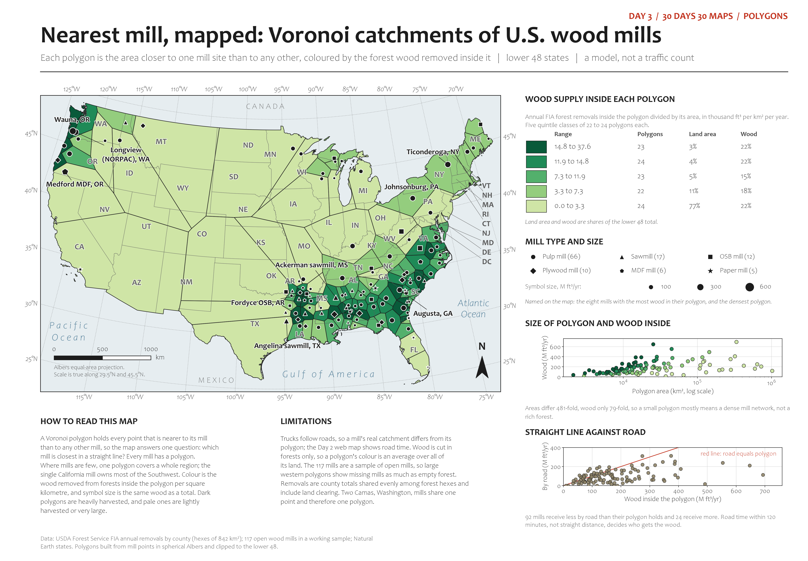

Forest products · polygons
Open the interactive map, which compares these straight-line polygons with road-time polygons.
Nearest mill, mapped: Voronoi catchments of U.S. wood mills
Each polygon is the area closer to one open wood-mill site than to any other, coloured by the forest wood removed inside it. A model, not a traffic count, and the mill list is a sample.
- Vector PDF, 36 x 25 in
- PNG, 4500 x 3125 px
- Polygons (GeoPackage)
- Statistics (CSV)
- Method and caveats


Trucks follow roads, so a mill's real catchment differs from its polygon; the forest-to-mill web map shows road time. Open the PDF for the full-size, printable version with every note and chart.